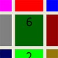

Puzzle-8
Descripción|  |
En el problema del Puzzle-8, nos plantean lo siguiente: Tenemos un tablero de 3x3 con con 8 fichas numeradas del 1 al 8. |
En un primer momento están descolocadas, hay que colocarlas de tal forma que el hueco quede en medio y se siga la secuencia 1-2-3-4-5-6-7-8 alrededor del perímetro del mismo.
RepresentaciónA partir de este enunciado hemos tomado como estado la colocación de las fichas en el tablero en cada instante.
- Estado inicial: {6,0,3,5,7,1,2,8,4}, piezas descolocadas
- Estado objetivo: {1,2,3,4,0,5,6,7,8}, tablero colocado, con el hueco en medio
A partir del estado inicial se crea el espacio de estados, aplicando una serie de operadores que hemos definido, basándonos en el enunciado:
- LEFT "Izquierda."
- RIGHT "Derecha."
- UP "Arriba."
- DOWN "Abajo."
Cada uno de estos operadores se podrá aplicar a un estado siempre y cuando éste cumpla su precondición:
- Ejemplo: "Derecha" , Sólo se podrá aplicar este operador si la ficha que se pretende mover no se encuentra en el borde derecho del tablero.
En cuanto a las estrategias utilizadas para este problema de representación, hemos utilizado estrategias no informadas:
- Búsqueda con Profundización Iterativa (IDS)
- Tiempo de ejecución: Aprox. 10 ms.
- Número de nodos expandidos: 162
- Solución: En 6 pasos(DOWN,DOWN,RIGHT,RIGHT,UP,LEFT)
- Búsqueda Primero en Anchura (BFS)
- Tiempo de ejecución: Aprox. 10 ms.
- Número de nodos expandidos: 293
- Solución: En 6 pasos(DOWN,DOWN,RIGHT,RIGHT,UP,LEFT)
- Búsqueda Primero en Profundidad (DFS)
- No se llega a la solución, debido a que se queda infinitamente ciclando.
- Búsqueda con límite de Profundidad (DLS)
- El límite en profundidad utilizado es 7.
- Tiempo de ejecución: Aprox. 20 ms.
- Número de nodos expandidos: 151
- Solución: En 14 pasos(...,DOWN,DOWN,RIGHT,RIGHT,UP,LEFT)
Además de una heurística, basada en la distancia de Manhattan, que asocia a cada estado el núumero mínimo de pasos que le quedan para llegar hasta el objetivo, la hemos denominado FuncionHeuristicManhattan.
- Tiempo de ejecución: Aprox. 10 ms.
- Número de nodos expandidos: 7
- Solución: En 6 pasos(DOWN,DOWN,RIGHT,RIGHT,UP,LEFT)
Para este problema podemos observar que a pesar de que es bastante sencillo, la heurística hace que el número de nodos expandidos sea mínimo por lo que es eficiente. Además podemos ver, que la búsqueda con límite en profundidad no es óptima ya que pasamos por estados que son intrascendentes para la solución, pasando de 6 pasos que nos ofrecen el resto de estrategias a 14.